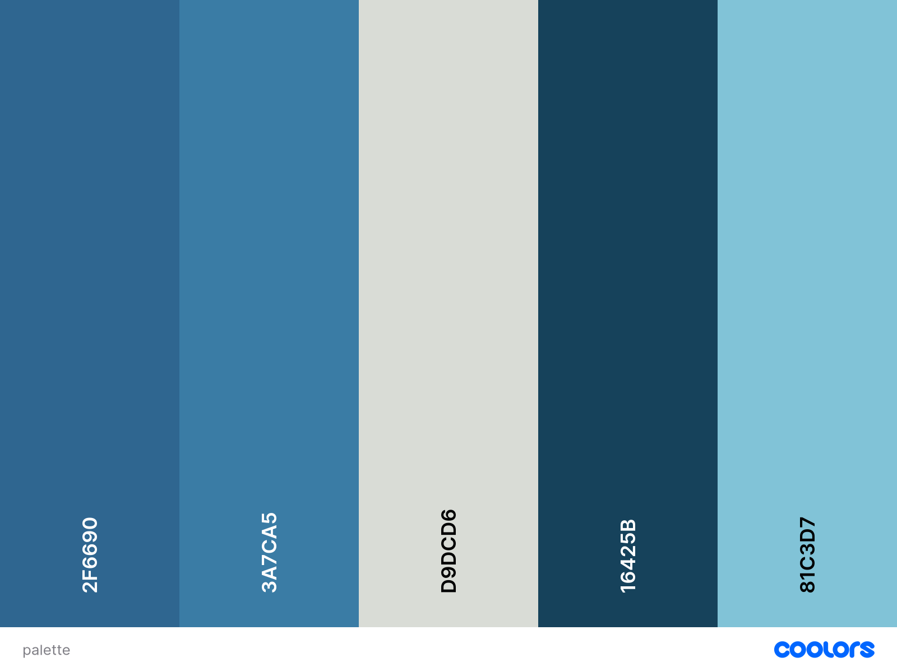

Overview
This site plan presents the structure and design for a Community Events Portal for Itu, SP, Brazil. The portal will help residents and visitors discover, share, and participate in local events, fostering community engagement and supporting local initiatives.
Content
Site Name
Community Events Portal is a platform dedicated to promoting and organizing community events in Itu, SP, Brazil.
Logo Idea
A vibrant and friendly logo featuring a calendar, location pin, or people icons, representing community, connection, and local activities.
Site Purpose
The portal aims to centralize information about local events, making it easy for residents and visitors to find, share, and participate in community activities. It encourages engagement, supports local organizations, and helps promote a vibrant community life.
Scenarios
- What events are happening in Itu this weekend?
- How can I submit my own event to the portal?
- Where can I find contact information for event organizers?
Color Scheme
Palette URL: https://coolors.co/e26d5a-efa8b8-d7bba8-bbb09b-3e2a35

- Teal (#197278): Primary color for headers and highlights.
- Charcoal (#283d3b): Navigation, footer, and backgrounds.
- Orange (#f4a259): Buttons, links, and call-to-action elements.
- White (#ffffff): Main background and card backgrounds.
- Black (#1b1b1e): Text and icons.
Typography
Headings: Montserrat, sans-serif, bold, modern and easy to read.
Body: Open Sans, Arial, sans-serif, clean and readable for all content.
Navigation: Montserrat, uppercase, for clarity and emphasis.
Heading Example
Subheading Example
Normal body text/paragraph
Open Sans, Arial, sans-serif.
Pages
- Home (index.html): Welcome message, site purpose, and highlights of upcoming or featured events.
- Events Directory (events.html): Searchable and filterable list of community events with details (date, location, description, organizer contact info).
- Submit/Contact (submit.html): Form for community members to submit new events or contact the organizers.